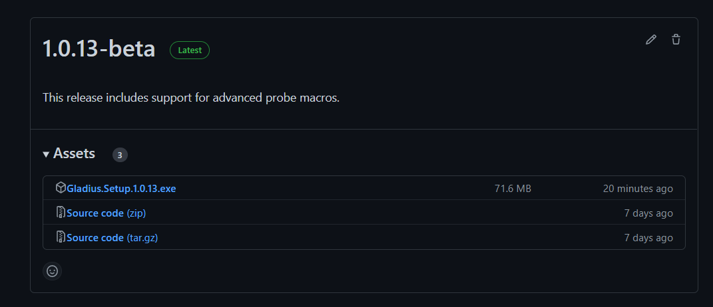
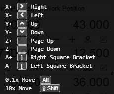

Introduction
Welcome to Gladius - The Zealandia Systems' version of the popular open source GCode sender, CNCjs.

Installation
Gladius is free to download from GitHub link here. A Windows PC (Windows 7, 8 ,10) is required to use Gladius.
 Click on the "Gladius.Setup.X.X.XX.exe to download the installation file.
User Interface
Layout of the Application

Controller Console
When connected this shows a terminal box of the controller. This can be used to see status and input Gcode commands.
Camera Interface
This is the camera interface where you can input a camera from the PC.
Gcode Viewer
For viewing imported Gcode can also view Gcode path
Menu selection and connection status
This is where quick buttons such as connection and machine homing
Machine coordinates and movement
Workspace coordinates and machine movement buttons here
Machine Widgets
Machine widgets such as probing, spindle, laser, etc
Machine Startup
Connecting to the machine
- Open Gladius
- Click on the blue button "Disconnected" at the top right of Gladius. It will show a drop down menu.
- Select the com port that is connected to controller and hit "Open"

On the top left side of Gladius, the console should pop up with a black terminal and the "Disconnected" button should now be "Connected"

Homing the machine
Press the "Homing" button at the top right of Gladius to home the machine. The machine should start moving to it's home position.

Moving the machine
On the right hand side of Gladius there is a box called "Axes". There are button called "Y+", "X+", "Z+" etc. These buttons are used to move the machine around. To change the distance it moves click on the button next to "Z0" (default will be "0.001mm"). It will bring a drop down menu with a list of diffent move steps.

Another way to move the machine is to use the keyboard. To enable this click on the keyboard picture button next to "MDI". See picture below.

Machine Run
Before running up the machine we reccomend you follow the startup procedure and spindle warm up below.
Startup Procedure
Turn on your Machine at the controller
Make sure the USB is connected to the Computer
Connect to your machine through Gladius
Home the machine
Run a tool change to set machine work co-ordinates
Run the XYZ Probe, or manually set work coordinates
Press X0Y0 and Z0 to move the machine to work coordinate origin to verify position.
Ready to go! Run your GCode
Spindle Warmup
The warm up should be performed before use to increase the longevity of your machine. Each stage should be held for 120 seconds (two minutes). Macro link [here]
7,500 RPM
9,000 RPM
11,500 RPM
15,000 RPM
18,000 RPM
Running Gcode
To run your Gcode you will need to be connected the controller. Click on the "Upload G-code" and browse to the Gcode you want to run. After you have upload the file click run and the machine should start running the Gcode.
Workspace
The workspace in Gladius is very similar to CNCjs. (put links here for cncjs stuff maybe explain how it works)
There are widgets located on the right or left side of Gladius screen.
You can enable pre-built widgets or create a custom widget on Gladius. This is found on the right side called "Manage Widgets"


Console

This is the controller console where you can read and enter manually Gcode commands. See Gcode Commands for more info.
SwordFish Widget
Underneath this console is the SwordFish Widget, this gives the user the general status of the machine.

Settings
Clicking on Settings will open up a tabbed UI. This shows work coordinate system, tools, post, events and about.

Note: If you are not connected to the machine, you will not be able to edit any machine based settings. Please ensure that you are connected to the machine and that the machine is responding to your commands - if there is a bug and the firmware has hung, please lodge a support ticket with us. Reset the controller by down powering and re-powering ensuring that the USB is also disconnected.
Probe Widget
The probe widget is located on the right side of Gladius. This widget helps you use a touch plate to set your Work Coordinate System offsets. In order to use the "Probe XYZ" Function, you must have selected the correct corner you have placed the touch plate onto.

picutre here for touch plate
XYZ Touch Plate
In order to set your first Work Place Coordinates (WCS in future reference) we have to use the XYZ Touch Plate. This will only work if you have already done a manual Tool Change function to set the first tool length with your Tool Probe. Plug the touch plate into the front of the machine.
Place the plate on the work piece and jog the spindle so that the tool is in the middle and about 15mm above the bottom of the pocket on the plate.
Inside Gladius, make sure you have the correct corner that you are probing, set in the probe screen. Make sure the correct tool diameter is set as well... otherwise this will cause you some grief 😊
Hit XYZ Probe to automatically start the probe function.
Video here of demo.
Spindle Widget
This Widget provides manual Spindle Control

See Gcode commands for M command definition.
Keyboard Shortcuts
These are the current keys used in the cnc (from v0.15.3).
! - Feed Hold
~ - Resume
ctrl + alt + command + h - Homing
ctrl + alt + command + u - Unlock
ctrl + alt + command + r - Reset
ctrl + alt + command + x - Select/Deselect X Axis
ctrl + alt + command + y - Select/Deselect Y Axis
ctrl + alt + command + z - Select/Deselect Z Axis
ctrl + alt + command + a - Select/Deselect A Axis
ctrl + alt + command + b - Select/Deselect B Axis (Supported in v1.9.15)
ctrl + alt + command + c - Select/Deselect C Axis (Supported in v1.9.15)
ctrl + alt + command + = - Toggle Jog Distance
ctrl + alt + command + + - Increase Jog Distance (Supported in v1.9.15)
ctrl + alt + command + - - Decrease Jog Distance (Supported in v1.9.15)
ctrl + alt + command + [ - Jog Backward
ctrl + alt + command + ] - Jog Forward
ctrl + alt + shift + 7 - Shuttle Backward (Fastest)
ctrl + alt + shift + 6 - Shuttle Backward (Faster)
ctrl + alt + shift + 5 - Shuttle Backward (Fast)
ctrl + alt + shift + 4 - Shuttle Backward (Normal)
ctrl + alt + shift + 3 - Shuttle Backward (Slow)
ctrl + alt + shift + 2 - Shuttle Backward (Slower)
ctrl + alt + shift + 1 - Shuttle Backward (Slowest)
ctrl + alt + command + 0 - Shuttle Stop
ctrl + alt + command + 1 - Shuttle Forward (Slowest)
ctrl + alt + command + 2 - Shuttle Forward (Slower)
ctrl + alt + command + 3 - Shuttle Forward (Slow)
ctrl + alt + command + 4 - Shuttle Forward (Normal)
ctrl + alt + command + 5 - Shuttle Forward (Fast)
ctrl + alt + command + 6 - Shuttle Forward (Faster)
ctrl + alt + command + 7 - Shuttle Forward (Fastest)Tool Change
This function automatically calls an M6 command, sending the spindle to the front left of the machine, by the emergency stop, ready to accept a new tool. It will then ask for confirmation of the tool being installed, and upon accepting it will probe the Z height automatically using the Z offset probe.
GCode Commands
Current GCode Commands Supported by SwordFish
| G Commands | Use |
|---|---|
| G0 | Rapid move, Linear |
| G1 | Feed move, Linear |
| G2 | Arc or circle, CW |
| G3 | Arc or circle, CCW |
| G20 | Inch Units |
| G21 | mm units |
| G37 | Single Z-Probe. Tool must be positioned above the probe, which is set by WCS (work coordinate system) G59.9 X0 Y0 position |
| G54 - G59.9 | Workspace Coordinates |
| G90 | Absolute Positioning |
| G91 | Relative Positioning |
| M Commands | Use |
|---|---|
| M0-M1 | Unconditional stop |
| M3 | Spindle on, CW |
| M4 | Spindle on, CCW |
| M5 | Spindle stop |
| M7 | Coolant - Mist |
| M9 | Coolant off |
| M12 | Coolant air |
| M20 | List SD card |
| M21 | Initialise SD card |
| M22 | Release SD card |
| M23 | Select SD file |
| M24 | Start or resume SD program |
| M25 | Pause SD program |
| M26 | Set SD position |
| M27 | Report SD program status |
| M28 | Start SD write |
| M29 | Stop SD write |
| M30 | Delete SD file |
| M31 | Program time |
| M32 | Select and start |
| M33 | Get long path |
| M34 | SD card sorting |
| M119 | Retrieve endstop status |
| M997 | Restart into firmware update mode. This will open a USB drive and wait for you to copy and paste the new firmware file into the drive. See here for SwordFish firmware. |
Configuration Settings
WARNING!!
These functions are mainly designed for service technicians, or those that feel comfortable fiddling. If you are uncomfortable and are having issues with Gladius and the machine contact us for support.
Firmware update
In order to do a firmware update, you will need to enter M997 into the console in Gladius. Once you do this, the controller will restart and open a USB drive on your PC. Click and drag or copy and past this attached firmware file into the USB drive. Once complete, the controller will automatically reboot and install the update.
Latest firmware here

SwordFish Post Processors
HSM Works Fusion360 Vectric Software
These are all supported by our Post Processor installer now located inside of Gladius.
something here for tool library
Tool Offset Probe Calibration
For a brand new machine you will need to calibrate the tool probe.
Before calibrating the G59.9 (tool probe) WCS, you should install a tool into the spindle, sticking out roughly 35mm.
Move the spindle directly above the tool probe, before running the following g-code. (ATC machines will need to turn off soft limits)
G49 //clear offset
G59.9 //selecting tool probe WCS P60
G37 //run probe
G10 L20 P60 X0 Y0 // set coordinates
M500 //save
G54.0 / change back into another WCS
IMPORTANT!! Run a tool change after calibration to make sure the correct tool height is set, as the calibration steps do not do this!
Video here on how it functions once its calibrated. Get a 6mm drill bit or one of your new tools, measure it with some calipers as you will need it for the calibration.
Setting Workspace Limits
You will need to make sure limits are set:
P2 Workspace
M212 X0 Y0 Z-150
M213 X1330 Y930 Z0
### P3 Workspace
M212 X0 Y0 Z-150
M213 X1330 Y1330 Z0
### P4 Workspace
M212 X0 Y0 Z-150
M213 X1330 Y2630 Z0
Enabling Automatic Tool Changer Function
M2000 O2 ?/tooling >{"automatic":true}
Selecting Installed VFD
1.5kw:
M2000 O0 ?/tooling/drivers/0 >{"index":0,"type":0}
M2000 O0 ?/tooling/driverParameters/0 >{"index":0,"driver":0,"id":10,"value":18000}
2.2kw:
M2000 O0 ?/tooling/drivers/0 >{"index":0,"type":0}
M2000 O0 ?/tooling/driverParameters/0 >{"index":0,"driver":0,"id":10,"value":18000}
6kw:
[fix]Troubleshooting
This is the troubleshooting section make sure to check these before contacting us
Depth Issue
If you are having random depth issue make sure to clean the machine/ travel oil off the collect. Becuase of this the tool can move during a cut which can cause random depth cut issues. If you are having issue please contact us for help.
Contact us
Additional Information and Support If you have problems try the following:
- Visit the Zealandia Systems website for notes and guides
- Refer to the troubleshooting section if one is present in this document
- Contact the support desk at support@zealandia.systems